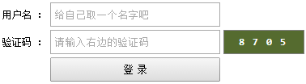
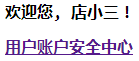
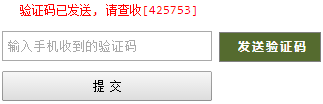
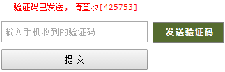

Spring MVC @SessionAttributes
来源：原创 发布时间：2015-03-25 归档：springmvc
开发环境 ：
JDK 7
Maven 3
Tomcat 7
Spring 4.1.5
Eclipse Luna
@SessionAttributes 注解在类级别上, 表明属性的作用域是 session。
下面用例将展示如何通过 @SessionAttributes 注解将一个属性放入 session 域, 以及放入 session 域后如何来删除这个属性。
示例代码片段 1
下面用例将展示如何通过 @SessionAttributes 注解将一个属性放入 session 域, 以及放入 session 域后如何来删除这个属性。
@Controller
@SessionAttributes("randomCode")
public class LoginController {
private static final String MESSAGE = "message";
private static final String DEFAULT_USER = "游客";
/**
* 登录页面
*
* @param model
* ModelMap
* @return
*/
@RequestMapping(value = "/login", method = GET)
public String login(ModelMap model) {
model.addAttribute("randomCode", getRandomCode());
return "login";
}
/**
* 用户登录
*
* @param randomCode
* 验证码
* @param model
* ModelMap
* @param session
* HttpSession
* @param sessionStatus
* SessionStatus
* @param username
* 用户名
* @param inputCode
* 用户输入的验证码
* @return
*/
@RequestMapping(value = "/login", method = POST)
public String login(@ModelAttribute("randomCode") String randomCode,
ModelMap model, HttpSession session, SessionStatus sessionStatus,
String username, String inputCode) {
if (!randomCode.equals(inputCode)) {
model.addAttribute(MESSAGE, "验证码错误, 请重新登录！");
return "login";
}
if (!StringUtils.hasText(username)) {
username = DEFAULT_USER;
}
session.setAttribute("currUser", username);
sessionStatus.setComplete();
return "home";
}
/**
* 生成随机验证码
*
* @return
*/
private String getRandomCode() {
StringBuilder randomCode = new StringBuilder();
for (int i = 0; i < 4; i++) {
randomCode.append(ThreadLocalRandom.current().nextInt(9));
}
return randomCode.toString();
}
}
login.jsp
<body>
<div id="form" align="center">
<div id="message">${message}</div>
<form method="post">
<table>
<tr>
<td><label for="username">用户名 ：</label></td>
<td><input type="text" name="username" placeholder="给自己取一个名字吧"></td>
</tr>
<tr>
<td><label for="inputCode">验证码 ：</label></td>
<td><input type="text" name="inputCode" placeholder="请输入右边的验证码"></td>
<td><div id="randomCode">${randomCode}</div></td>
</tr>
<tr>
<td> </td>
<td><input type="submit" value="登 录"></td>
</tr>
</table>
</form>
</div>
</body>
GET /login
处理方法 login ( GET ) 被执行, 首先是通过 getRandomCode() 产生一个 4 位数的随机数字作为验证码, 并通过 model.addAttribute("randomCode", getRandomCode()) 将产生的验证码放到模型中, 放到模型中的属性默认是 request 域, 即只在本次请求有效。
这里由于放入模型的 key 与 @SessionAttributes("randomCode") 的 key 一致, 因此 randomCode 属性并不放到 request 域, 而放到 session 域。
若需要将多个属性放到 session 域, 可以这样做, @SessionAttributes({"prop1", "prop2", "prop3"})。

处理方法 login ( GET ) 被执行, 首先是通过 getRandomCode() 产生一个 4 位数的随机数字作为验证码, 并通过 model.addAttribute("randomCode", getRandomCode()) 将产生的验证码放到模型中, 放到模型中的属性默认是 request 域, 即只在本次请求有效。
这里由于放入模型的 key 与 @SessionAttributes("randomCode") 的 key 一致, 因此 randomCode 属性并不放到 request 域, 而放到 session 域。
若需要将多个属性放到 session 域, 可以这样做, @SessionAttributes({"prop1", "prop2", "prop3"})。
用户名不是必须的, 输入验证码, 点登录或回车, 将发起 POST /login 请求。
处理方法 login ( POST ) 执行过程中, @ModelAttribute("randomCode") String randomCode, 是从 session 域中将 randomCode 属性取出。
若验证码正确, 将执行 HttpSession.setAttribute("currUser", username), 来将用户名放入到 HttpSession, 并且执行 SessionStatus.setComplete(), 作用效果如下。
处理方法 login ( POST ) 执行过程中, @ModelAttribute("randomCode") String randomCode, 是从 session 域中将 randomCode 属性取出。
若验证码正确, 将执行 HttpSession.setAttribute("currUser", username), 来将用户名放入到 HttpSession, 并且执行 SessionStatus.setComplete(), 作用效果如下。
<body>
<h1>欢迎您, ${currUser}！${randomCode}</h1>
<h3><a href="${pageContext.request.contextPath}/user/security">用户账户安全中心</a></h3>
</body>

可以看到, ${currUser} 有值, ${randomCode} 没值, 这是因为执行 SessionStatus.setComplete() 后, 通过 @SessionAttributes 放入 session 中的属性清除了, 但不会清除 HttpSession 中的属性。
示例代码片段 2
下面用例将展示 @SessionAttributes 属性未初始化时, 如何防止 500 异常。
@Controller
@RequestMapping("/user/security")
@SessionAttributes("smsCode")
public class UserAccountSecurity {
@RequestMapping
public String input() {
return "input";
}
/**
* 发送短信验证码
*
* @param model
* ModelMap
* @return
*/
@RequestMapping(value = "/sendSmsCode", method = GET)
public String sendSmsCode(ModelMap model) {
String smsCode = getRandomCode();
model.addAttribute("smsCode", smsCode);
model.addAttribute("message", "验证码已发送, 请查收[" + smsCode + "]");
return "input";
}
/**
* 验证手机号码
*
* @param smsCode
* 系统产生的验证码
* @param model
* ModelMap
* @param sessionStatus
* SessionStatus
* @param inputCode
* SessionStatus
* @return
*/
@RequestMapping(value = "/verifyPhone", method = POST)
public String verifyPhone(@ModelAttribute("smsCode") String smsCode,
ModelMap model, SessionStatus sessionStatus, String inputCode) {
if (!StringUtils.hasText(inputCode)) {
model.addAttribute("message", "请输入验证码！");
} else {
if (inputCode.equals(smsCode)) {
sessionStatus.setComplete();
model.addAttribute("message", "绑定手机成功！");
} else {
model.addAttribute("message", "验证码错误, 请重新输入！");
}
}
return "input";
}
/**
* 验证手机号码
*
* @param model
* ModelMap
* @param sessionStatus
* SessionStatus
* @param inputCode
* 用户输入的验证码
* @return
*/
@RequestMapping(value = "/verifyMobile", method = POST)
public String verifyMobile(ModelMap model, SessionStatus sessionStatus, String inputCode) {
if (model.containsAttribute("smsCode")) {
String smsCode = (String) model.get("smsCode");
if (smsCode.equals(inputCode)) {
sessionStatus.setComplete();
model.addAttribute("message", "绑定手机成功！");
} else {
model.addAttribute("message", "验证码错误, 请重新输入！");
}
} else {
model.addAttribute("message", "请发送验证码到你的手机以完成验证！");
}
return "input";
}
/**
* 产生随机数
*
* @return
*/
private String getRandomCode() {
StringBuilder randomCode = new StringBuilder();
for (int i = 0; i < 6; i++) {
randomCode.append(ThreadLocalRandom.current().nextInt(9));
}
return randomCode.toString();
}
}
input.jsp
<body>
<div id="form" align="center">
<div id="message">${message}</div>
<%-- <form action="${pageContext.request.contextPath}/user/security/verifyMobile" method="post"> --%>
<form action="${pageContext.request.contextPath}/user/security/verifyPhone" method="post">
<input type="text" name="inputCode" placeholder="输入手机收到的验证码">
<span class="smsCode"
onclick="javascript:window.location.href='${pageContext.request.contextPath}/user/security/sendSmsCode'">
发送验证码</span>
<br><input type="submit" value="提 交">
</form>
</div>
</body>
GET /user/security --> 页面如下

点击发送验证码, 再输入验证码提交。这是一个正常的流程。
下面来执行这样一个流程, 首先重启服务器 ( 必须重启 ), 不点击发送验证, 随便输入内容或不输入内容直接提交, 这时候报 HTTP Status 500 - Expected session attribute 'smsCode'
这是因为, 处理方法 verifyPhone 中的 @ModelAttribute("smsCode") String smsCode 引起的。
当不点击发送验证码时, 处理方法 sendSmsCode 没有执行, 那么这时候, @SessionAttributes("smsCode") smsCode 属性尚未被初始化, 这时候又期望通过 @ModelAttribute("smsCode") 从 session 中取得 smsCode 属性的值, 这样就会出问题。
将 input.jsp 中的 <%-- <form action="${pageContext.request.contextPath}/user/security/verifyMobile" method="post"> --%> 注释取消, 将下一行注释起来。再走一次同样的流程, 无需重启服务器, 发起 GET /user/security 请求, 不点击发送验证, 随便输入内容或不输入内容直接提交, 走 verifyMobile 处理方法, 这时候流程回归正常。
这里主要是通过 ModelMap 来处理, 除了 request 域, session 域里的属性, ModelMap 一样可以访问的到, 这样就可以防止 @SessionAttributes 空值引发的 500 异常。

点击发送验证码, 再输入验证码提交。这是一个正常的流程。
下面来执行这样一个流程, 首先重启服务器 ( 必须重启 ), 不点击发送验证, 随便输入内容或不输入内容直接提交, 这时候报 HTTP Status 500 - Expected session attribute 'smsCode'
这是因为, 处理方法 verifyPhone 中的 @ModelAttribute("smsCode") String smsCode 引起的。
当不点击发送验证码时, 处理方法 sendSmsCode 没有执行, 那么这时候, @SessionAttributes("smsCode") smsCode 属性尚未被初始化, 这时候又期望通过 @ModelAttribute("smsCode") 从 session 中取得 smsCode 属性的值, 这样就会出问题。
将 input.jsp 中的 <%-- <form action="${pageContext.request.contextPath}/user/security/verifyMobile" method="post"> --%> 注释取消, 将下一行注释起来。再走一次同样的流程, 无需重启服务器, 发起 GET /user/security 请求, 不点击发送验证, 随便输入内容或不输入内容直接提交, 走 verifyMobile 处理方法, 这时候流程回归正常。
这里主要是通过 ModelMap 来处理, 除了 request 域, session 域里的属性, ModelMap 一样可以访问的到, 这样就可以防止 @SessionAttributes 空值引发的 500 异常。
示例代码下载